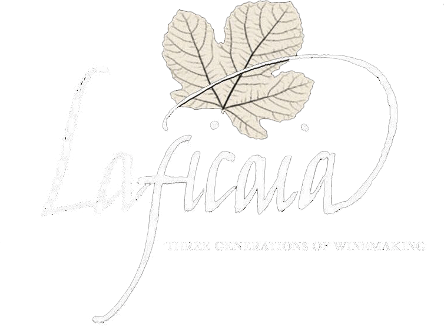

"Hello! Wine lovers"
wine tasting
in the vineyard 2021
An excellent opportunity to taste local
delicacies selected to match the various wines, to learn more from our esteemed oenologists
explaining the various properties of wine and to listen our live band.
A different way to approach wine and to discover lands,
scents and stories of winemakers.
Please contact us per Email for any further informations
about the Wine Tasting out in the Vineyard event
winetastingevent@mail.com
about the Wine Tasting out in the Vineyard event
winetastingevent@mail.com
Wine Tasting in the Vineyard 2021
The goal of our organization is to animate more and more wineries throughout Italy that organize activities, tastings and interactive events outside, in the middle of the vineyards.

See past Wine Tasting events
Take a look at some past Wine Tasting events which took place outside, in the middle of the vineyards.